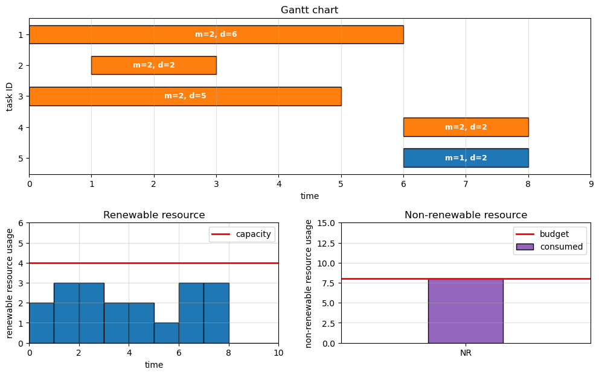

from __future__ import annotations
import numpy as np
import matplotlib.pyplot as plt
import pyomo.environ as pyo
from pyomo.opt import SolverFactory
# ---------------------------------------------------------------------------
# 1. Problem data
# ---------------------------------------------------------------------------
def build_problem_data(time_varying_renewable: bool = False) -> dict:
th = 40 # time horizon
Nt = th # number of time steps
# Per-mode durations / renewable demand / non-renewable demand for tasks 1..5
durations = {1: [4, 2, 3, 2, 2],
2: [6, 2, 5, 2, 4]}
rr = {1: [2, 1, 3, 1, 2],
2: [1, 1, 1, 1, 1]}
nrr = {1: [3, 2, 4, 2, 3],
2: [1, 1, 2, 1, 2]}
I = len(durations[1]) # number of tasks
M = len(durations) # number of modes
# Precedence as (predecessor, successor) pairs
precedence = [(1, 4), (2, 5), (3, 5)]
# Resource limits
ar = 4 # renewable per period (constant)
NR = 8 # non-renewable total budget
# Renewable availability profile R(t)
R_renewable = [ar] * Nt
if time_varying_renewable:
for t_idx in (1, 2, 3):
R_renewable[t_idx] = 2 * ar
return dict(I=I, M=M, Nt=Nt, th=th,
durations=durations, rr=rr, nrr=nrr,
precedence=precedence,
R_renewable=R_renewable, NR=NR)
# ---------------------------------------------------------------------------
# 2. Pyomo model
# ---------------------------------------------------------------------------
def build_mrcpsp_model(data: dict) -> pyo.ConcreteModel:
"""Time-indexed binary formulation; objective = makespan."""
m = pyo.ConcreteModel("MRCPSP")
I, M_, Nt = data['I'], data['M'], data['Nt']
d = data['durations']
r = data['rr']
nr = data['nrr']
# --- Sets --------------------------------------------------------------
m.TASKS = pyo.RangeSet(1, I)
m.MODES = pyo.RangeSet(1, M_)
m.TIMES = pyo.RangeSet(0, Nt - 1) # 0-indexed time slots
# --- Variables ---------------------------------------------------------
m.x = pyo.Var(m.TASKS, m.MODES, m.TIMES, within=pyo.Binary)
m.makespan = pyo.Var(within=pyo.NonNegativeReals)
# --- Constraints -------------------------------------------------------
# (a) Each task starts exactly once, in exactly one mode
def assignment_rule(_m, i):
return sum(_m.x[i, k, t] for k in _m.MODES for t in _m.TIMES) == 1
m.assignment = pyo.Constraint(m.TASKS, rule=assignment_rule)
# (b) Disallow start times that would overshoot the horizon
def horizon_rule(_m, i, k, t):
if t + d[k][i - 1] > Nt:
return _m.x[i, k, t] == 0
return pyo.Constraint.Skip
m.horizon = pyo.Constraint(m.TASKS, m.MODES, m.TIMES, rule=horizon_rule)
# (c) Precedence: F_i <= S_j for every (i, j) in the DAG
m.precedence = pyo.ConstraintList()
for (i, j) in data['precedence']:
F_i = sum((t + d[k][i - 1]) * m.x[i, k, t]
for k in m.MODES for t in m.TIMES)
S_j = sum(t * m.x[j, k, t]
for k in m.MODES for t in m.TIMES)
m.precedence.add(F_i <= S_j)
# (d) Renewable capacity at each time slot t
def renewable_rule(_m, t):
usage = sum(r[k][i - 1] * _m.x[i, k, tau]
for i in _m.TASKS
for k in _m.MODES
for tau in _m.TIMES
if tau <= t < tau + d[k][i - 1])
return usage <= data['R_renewable'][t]
m.renewable = pyo.Constraint(m.TIMES, rule=renewable_rule)
# (e) Non-renewable budget (consumed once, when the task starts)
def non_renewable_rule(_m):
return sum(nr[k][i - 1] * _m.x[i, k, t]
for i in _m.TASKS for k in _m.MODES for t in _m.TIMES) \
<= data['NR']
m.non_renewable = pyo.Constraint(rule=non_renewable_rule)
# (f) Makespan dominates every task's completion time
def makespan_rule(_m, i):
return _m.makespan >= sum((t + d[k][i - 1]) * _m.x[i, k, t]
for k in _m.MODES for t in _m.TIMES)
m.makespan_def = pyo.Constraint(m.TASKS, rule=makespan_rule)
# --- Objective ---------------------------------------------------------
m.objective = pyo.Objective(expr=m.makespan, sense=pyo.minimize)
return m
# ---------------------------------------------------------------------------
# 3. Solve and post-process
# ---------------------------------------------------------------------------
def solve_model(model: pyo.ConcreteModel,
solver_candidates=('appsi_highs', 'highs', 'cbc', 'glpk', 'gurobi'),
tee: bool = False):
"""Try a list of solvers in order; use the first available one."""
for sname in solver_candidates:
try:
solver = SolverFactory(sname)
if solver.available(exception_flag=False):
print(f"[solver] using {sname}")
return solver.solve(model, tee=tee)
except Exception:
continue
raise RuntimeError("No MIP solver available on this machine.")
def extract_schedule(model: pyo.ConcreteModel, data: dict):
"""Return (schedule list, renewable usage profile, NR per task, makespan)."""
schedule = []
for i in model.TASKS:
for k in model.MODES:
for t in model.TIMES:
if pyo.value(model.x[i, k, t]) > 0.5:
dur = data['durations'][k][i - 1]
schedule.append(dict(
task=i, mode=k, start=t, finish=t + dur, duration=dur,
r=data['rr'][k][i - 1], nr=data['nrr'][k][i - 1]))
schedule.sort(key=lambda s: s['task'])
Nt = data['Nt']
Ur = np.zeros(Nt)
for s in schedule:
Ur[s['start']:s['finish']] += s['r']
Unr = np.array([s['nr'] for s in schedule])
makespan = pyo.value(model.makespan)
return schedule, Ur, Unr, makespan
def print_solution(schedule, Ur, Unr, makespan, data):
print("\n" + "=" * 60)
print(f"Optimal makespan: {makespan:g}")
print("=" * 60)
print(f"{'Task':>4} {'Mode':>4} {'Start':>5} {'Finish':>6} "
f"{'Dur':>4} {'r':>3} {'nr':>3}")
for s in schedule:
print(f"{s['task']:>4} {s['mode']:>4} {s['start']:>5} "
f"{s['finish']:>6} {s['duration']:>4} {s['r']:>3} {s['nr']:>3}")
print(f"\nTotal non-renewable consumed: {int(Unr.sum())} / {data['NR']}")
print(f"Peak renewable usage: {int(Ur.max())} / "
f"{max(data['R_renewable'])}")
# ---------------------------------------------------------------------------
# 4. Plotting: Gantt on top, renewable + non-renewable usage beneath
# ---------------------------------------------------------------------------
def plot_solution(schedule, Ur, Unr, data, save_path: str | None = None):
I = data['I']
Nt = data['Nt']
# Layout: Gantt spans the full top row, two resource plots side-by-side below.
fig = plt.figure(figsize=(12, 7))
gs = fig.add_gridspec(2, 2, height_ratios=[1.3, 1.0],
hspace=0.35, wspace=0.25)
ax_gantt = fig.add_subplot(gs[0, :])
ax_ren = fig.add_subplot(gs[1, 0])
ax_nr = fig.add_subplot(gs[1, 1])
# ---- Gantt chart ------------------------------------------------------
cmap = plt.get_cmap('tab10')
for s in schedule:
ax_gantt.barh(s['task'], s['duration'], left=s['start'],
color=cmap(s['mode'] - 1), edgecolor='black',
height=0.6)
ax_gantt.text(s['start'] + s['duration'] / 2, s['task'],
f"m={s['mode']}, d={s['duration']}",
ha='center', va='center', fontsize=9, color='white',
fontweight='bold')
ax_gantt.set_yticks(range(1, I + 1))
ax_gantt.set_xlabel('time')
ax_gantt.set_ylabel('task ID')
ax_gantt.set_title('Gantt chart')
ax_gantt.grid(True, axis='x', alpha=0.4)
ax_gantt.set_xlim(0, max(s['finish'] for s in schedule) + 1)
ax_gantt.invert_yaxis() # task 1 on top
# ---- Renewable resource usage over time -------------------------------
ax_ren.bar(np.arange(Nt) + 0.5, Ur, width=1.0,
color='#1f77b4', edgecolor='black')
ax_ren.step(np.arange(Nt), data['R_renewable'], where='post',
color='red', linewidth=2, label='capacity')
ax_ren.set_xlim(0, max(s['finish'] for s in schedule) + 2)
ax_ren.set_ylim(0, max(max(Ur), max(data['R_renewable'])) + 2)
ax_ren.set_xlabel('time')
ax_ren.set_ylabel('renewable resource usage')
ax_ren.set_title('Renewable resource')
ax_ren.legend(loc='upper right')
ax_ren.grid(True, alpha=0.4)
# ---- Non-renewable resource usage -------------------------------------
ax_nr.bar([1], [Unr.sum()], width=0.6, color='#9467bd',
edgecolor='black', label='consumed')
ax_nr.axhline(data['NR'], color='red', linewidth=2, label='budget')
ax_nr.set_xlim(0, 2)
ax_nr.set_ylim(0, max(15, data['NR'] + 3))
ax_nr.set_xticks([1]); ax_nr.set_xticklabels(['NR'])
ax_nr.set_ylabel('non-renewable resource usage')
ax_nr.set_title('Non-renewable resource')
ax_nr.legend(loc='upper right')
ax_nr.grid(True, axis='y', alpha=0.4)
if save_path:
fig.savefig(save_path, dpi=120, bbox_inches='tight')
return fig
# ---------------------------------------------------------------------------
# 5. Mermaid DAG generator
# ---------------------------------------------------------------------------
def generate_mermaid(data: dict, schedule=None) -> str:
"""Return a Mermaid `flowchart LR` representation of the project DAG.
If `schedule` is provided, every task node is annotated with the chosen
mode and duration; otherwise raw per-mode durations are listed.
"""
I = data['I']
prec = data['precedence']
successors = {i: [j for (p, j) in prec if p == i] for i in range(1, I + 1)}
predecessors = {i: [p for (p, j) in prec if j == i] for i in range(1, I + 1)}
sources = [i for i in range(1, I + 1) if not predecessors[i]]
sinks = [i for i in range(1, I + 1) if not successors[i]]
chosen = {s['task']: s for s in schedule} if schedule else None
lines = ['flowchart LR',
' S(((Start)))',
' E(((End)))']
for i in range(1, I + 1):
if chosen is not None:
s = chosen[i]
label = f"Task {i}<br/>m={s['mode']}, d={s['duration']}"
else:
ds = ', '.join(f"d{k}={data['durations'][k][i - 1]}"
for k in range(1, data['M'] + 1))
label = f"Task {i}<br/>{ds}"
lines.append(f' T{i}["{label}"]')
for i in sources:
lines.append(f' S --> T{i}')
for (p, j) in prec:
lines.append(f' T{p} --> T{j}')
for i in sinks:
lines.append(f' T{i} --> E')
return '\n'.join(lines)Ex. D4: Multi-Mode Resource-Constrained Project Scheduling Problem (MRCPSP).
Project DAG (with dummy start 0 and dummy end 6, omitted from the model): (0) -> (1) -> (4) -> (6) (0) -> (2) -> (5) -> (6) (0) -> (3) -> (5)
- Real tasks: 1..5
- Modes: 1, 2
- One renewable resource (per-period cap),
- one non-renewable resource (total cap).
Decision variable x[i, m, t] = 1 iff task i starts at time t in mode m
# ---------------------------------------------------------------------------
# 6. Main driver
# ---------------------------------------------------------------------------
#if __name__ == "__main__":
data = build_problem_data(time_varying_renewable=False)
model = build_mrcpsp_model(data)
solve_model(model)
schedule, Ur, Unr, makespan = extract_schedule(model, data)
print_solution(schedule, Ur, Unr, makespan, data)
plot_solution(schedule, Ur, Unr, data, save_path='mrcpsp_results.png')
print("\nFigure saved to: mrcpsp_results.png")
mermaid_code = generate_mermaid(data, schedule)
with open('mrcpsp_dag.mmd', 'w') as f:
f.write(mermaid_code)
print("Mermaid DAG saved to: mrcpsp_dag.mmd\n")
print("--- Mermaid source ---")
print(mermaid_code)[solver] using appsi_highs
============================================================
Optimal makespan: 8
============================================================
Task Mode Start Finish Dur r nr
1 2 0 6 6 1 1
2 2 1 3 2 1 1
3 2 0 5 5 1 2
4 2 6 8 2 1 1
5 1 6 8 2 2 3
Total non-renewable consumed: 8 / 8
Peak renewable usage: 3 / 4
Figure saved to: mrcpsp_results.png
Mermaid DAG saved to: mrcpsp_dag.mmd
--- Mermaid source ---
flowchart LR
S(((Start)))
E(((End)))
T1["Task 1<br/>m=2, d=6"]
T2["Task 2<br/>m=2, d=2"]
T3["Task 3<br/>m=2, d=5"]
T4["Task 4<br/>m=2, d=2"]
T5["Task 5<br/>m=1, d=2"]
S --> T1
S --> T2
S --> T3
T1 --> T4
T2 --> T5
T3 --> T5
T4 --> E
T5 --> E